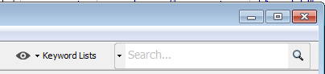

The keyword search bar is used to search for keywords in the manual mode (outside of ingest). The existing index will be searched for matching words, phrases, lists, or regular expressions. Results will be opened in a separate Results Viewer for every search executed and they will also be saved in the Directory Tree.
Individual keyword or regular expressions can be quickly searched using the search text box widget. To toggle between keyword and regular expression mode, use the down arrow in the search box.
Lists created using the Keyword Search Configuration Dialog can be manually searched by the user by pressing on the 'Keyword Lists' button, selecting the check boxes corresponding to the lists to be searched, and pressing the 'Search' button.
The manual search for individual keywords or regular expressions can be executed also during the ongoing ingest on the current index using the search text box widget. Note however, that you may miss some results if not entire index has yet been populated. Autopsy enables you to perform the search on an incomplete index in order to retrieve some preliminary results in real-time.
During the ingest, the manual search by keyword list is deactivated. A newly selected list can instead be added to the ongoing ingest, and it will be searched in the background instead.
Keywords and lists can be managed during ingest..
